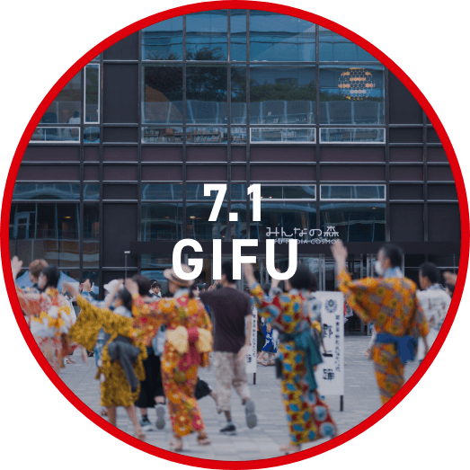

江戸時代から400年以上、郡上八幡の地で唄い踊り継がれ、2022年にはユネスコ無形文化遺産に登録された「郡上おどり」。夜に行われる郡上踊りになかなか参加しづらいママや子供達にも楽しんでもらいたい…そんな想いからこのイベントは生まれました。本来は一夜一会場で行われる郡上おどりを、昼間からご家族でも楽しめるのがこのイベントの魅力。会場では美味しい岐阜グルメなどを味わうこともできます。踊って、食べて、笑って、大切な人と楽しい夏の思い出を作りませんか？